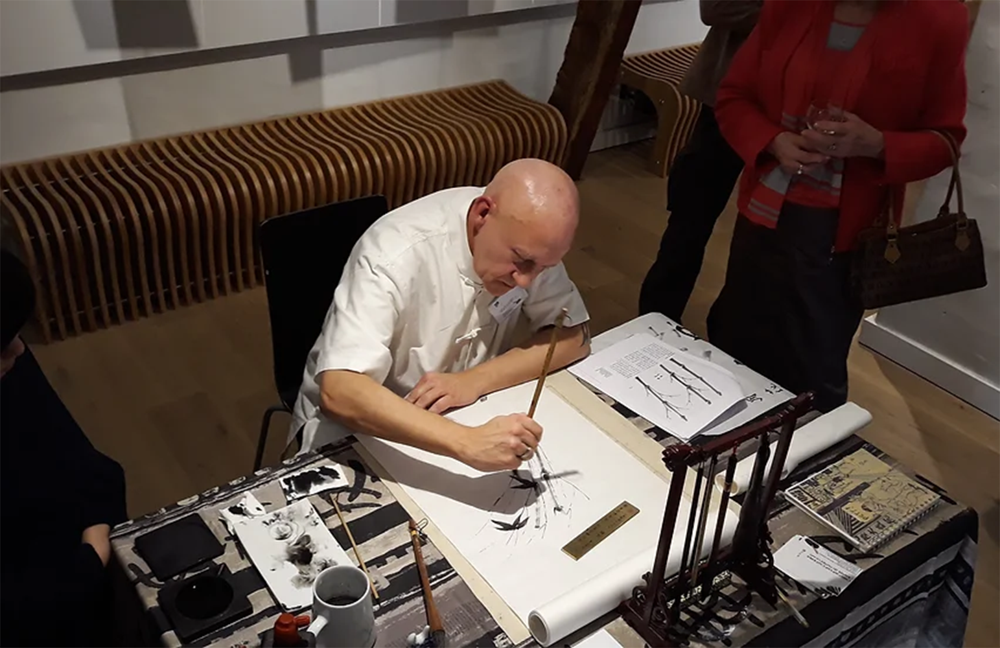

L'Empire Du Papier Vivant
Les expositions

- Exposition 2010 : Plein Vent à Boisfort
- Exposition 2011 à l’ancienne école de calligraphie du Japon à Watermaal Boisfort
- Exposition lors du 12 ème Concours “Chinese Language Bridge” Belgium division qui s'est tenu à Bruxelles le samedi 31 mars 2012 à la Maison du Dragon.
- Exposition le geste libre à la Galerie Espace 14 eme Art à Wavre du 14 au 17 juin 2012.
- Exposition au Restaurant La Brise (septembre 2012) Laeken.
- Exposition pour la Société Euler Hermes Europe Décembre 2012 au H2 Studio à Bruxelles.
- Exposition (mai - juin 2013) au centre artistique LR6.
- Exposition Colors Espace 8 à Saint-Gilles Worshop Salon Made in Asia ( Palais 5 du Heyzel) Mars 2015.
- Exposition Zodiac Piola.Libri Janvier 2015.
- Expositions Carte de visite pour la ville de Bruxelles.
- Chine Ink and its Journey to the West , mars 2018.
- Peinture et calligraphie arts majeurs en Chine à l’Hôtel de Ville de Tournai
- Parcours artistes Berchem Ste Agathe Aout 2019.
- Exposition La ferme rose à Uccle.
- Parcours des artistes à Wezembeek-Oppem (Mars 2022). à l’Espace l’Atelier 64 (décembre 2022).
- Echange artistique en Chine 2013 (Dandong) organisé par l'Institut Confucius de Liège sur le Thème : une année de Calligraphie et en collaboration avec le centre culturel chinois Zhong Ren.
- Workshop Chine 2013 Shan Fang Art Gallery.
- Exposition Chine 2019 Belgian Artist China Tour Art Gallery Nanking.
- Exposition Chine 2019 au Yixing museum.
- Workshop Peinture porcelaine, Chine 2019 à Jingdezhen.
- Workshop pour Euler Hermes ( Allianz ) Novembre 2019.
- Participation au concours national Pass museum : sélectionner par le vote du public pour L’Expo Nationale et... retenu dans la présélection. Plus de 2 000 artistes ont posé leur candidature. Sélectionné parmis les 200 œuvres qui ont obtenu le plus de votes et mon travail en fait partie.
- Workshop Février 2022 pour Korian Groupe.
- Participation à la fresque international L’Art du nouveau monde (Février 2022).